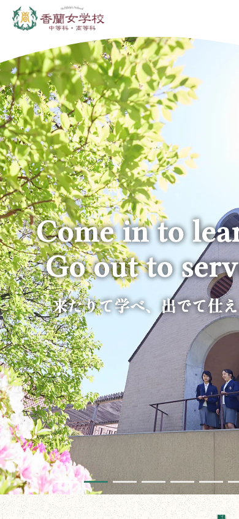
本命
香蘭女学校 中等科・高等科
https://www.koran.ed.jp/白基調＋緑アクセントで条件が一致。写真が画面の約89%、上辺だけ緩いアーチで白ヘッダーに食い込む。面積を減らさず形だけ柔らかくする。
すべてスマホ幅（390×844）のファーストビュー実写。画像かURLをクリックで実サイトへ。※社内確認用（検索除外）

白基調＋緑アクセントで条件が一致。写真が画面の約89%、上辺だけ緩いアーチで白ヘッダーに食い込む。面積を減らさず形だけ柔らかくする。
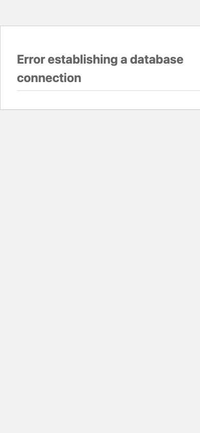
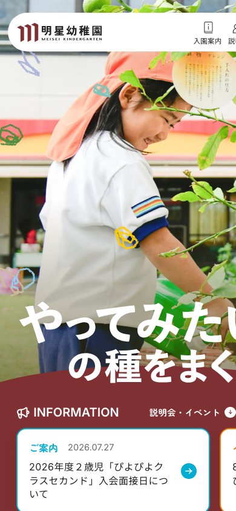
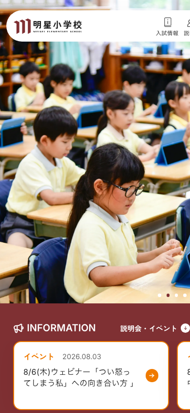
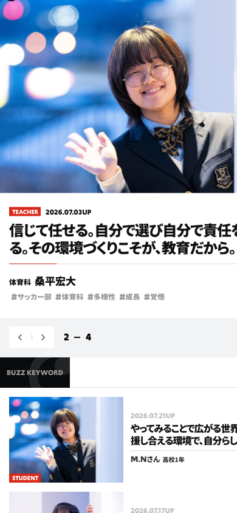
中高生のバストアップを画面幅75%で、顔が実寸大に見えるまで寄る。テキストは白カードにして写真に20〜30%重ねる。
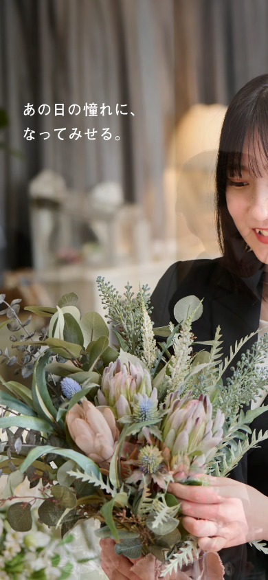
1画面目からナビ・ロゴ・ボタンを全部どけて写真だけ。コピーは左上に2行のみ。UIはスクロール後に出す。
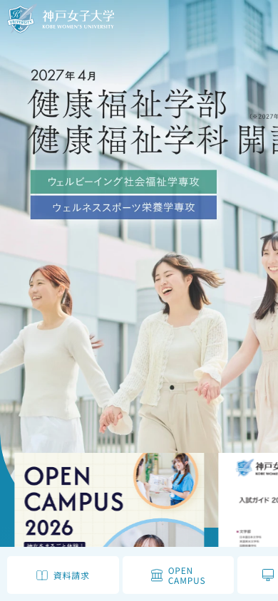
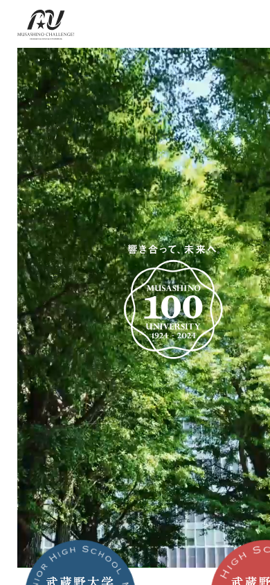
全面ベタが強すぎる時は四辺に20〜70pxの白マージンを残す“額装”。学年別導線は円形バッジで下辺に半分はみ出させる。
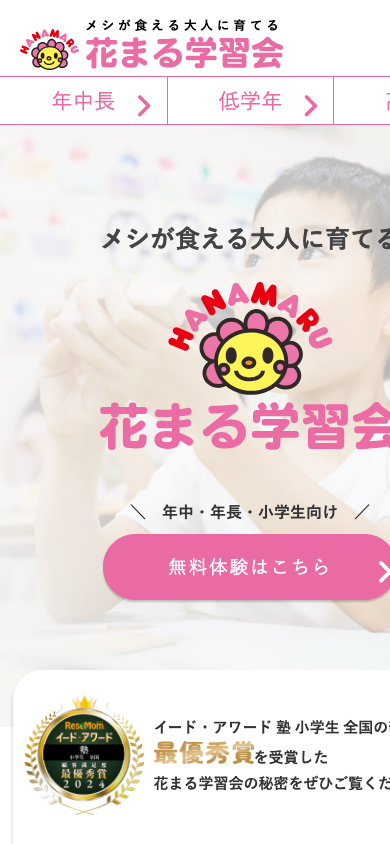
子どもの顔を画面幅まで寄せるサイズ感は正解。ただし白オーバーレイを強くかけると写真が飛んで背景化する。
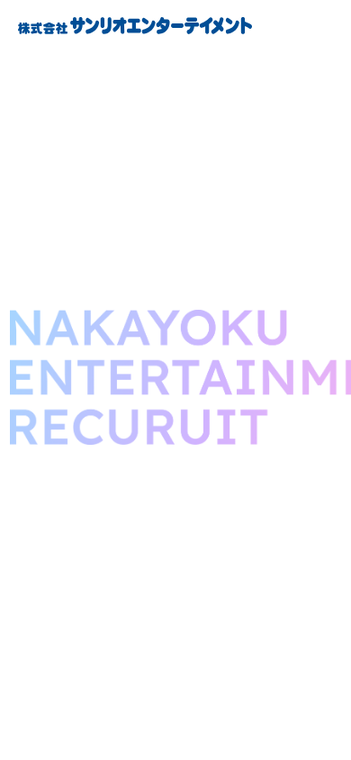
人物写真を1:1のアーチ（上半分が半円）で統一マスク。border-radius:50% 50% 0 0 / 35% 35% 0 0 の一行で効く。
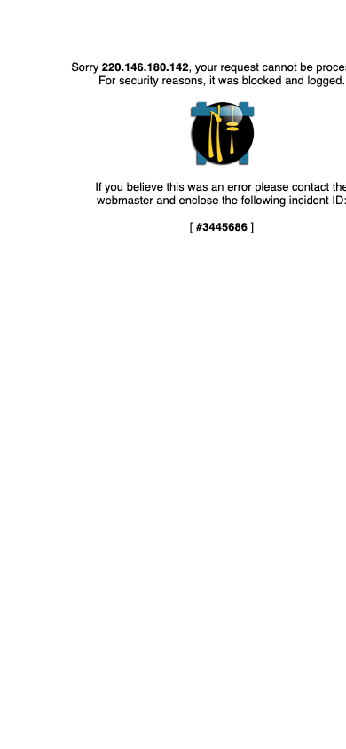
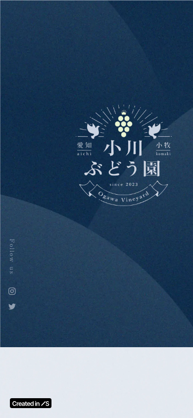
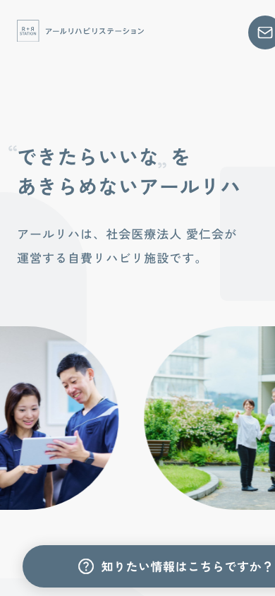
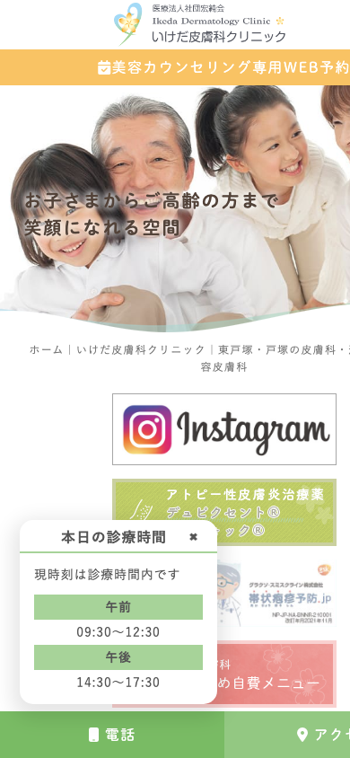
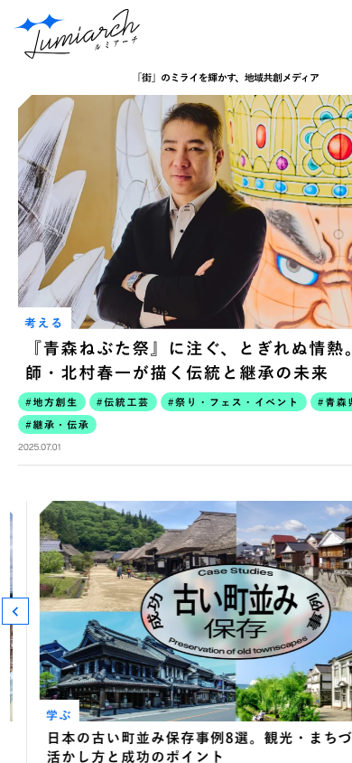
写真の上2角だけ斜めカット（clip-path）。丸くしたくない硬さを保てる。登場時は下からせり上げ。
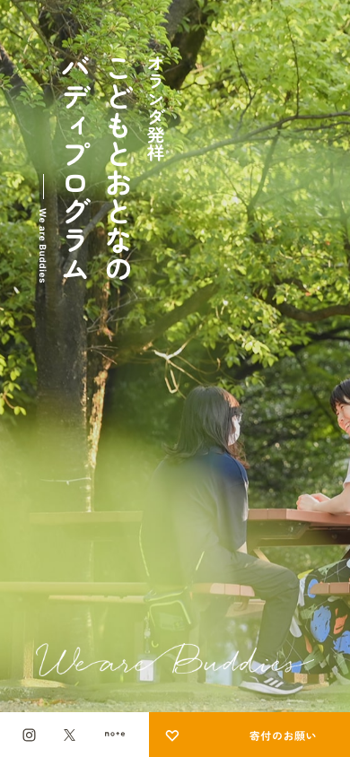
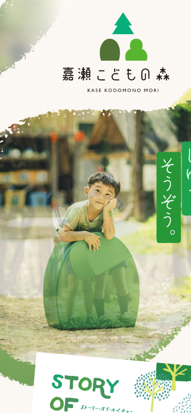
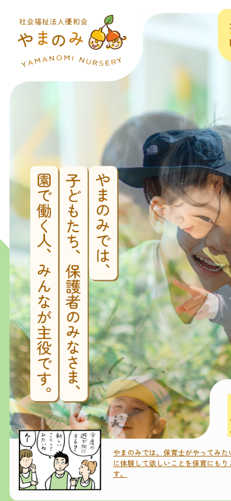
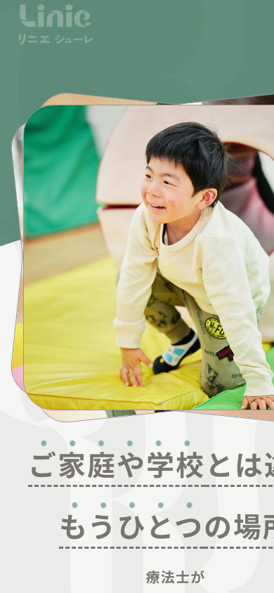
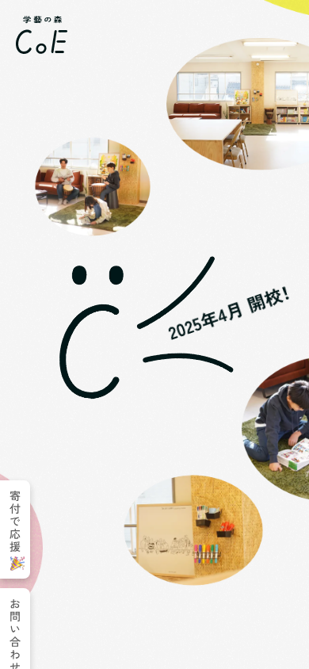
FVを position:fixed の全画面写真に、コピーは画面幅2割弱の縦カラムに閉じ込める。写真が常に主役に居座る。
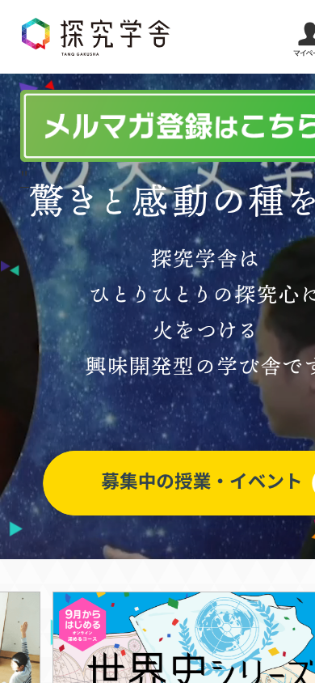
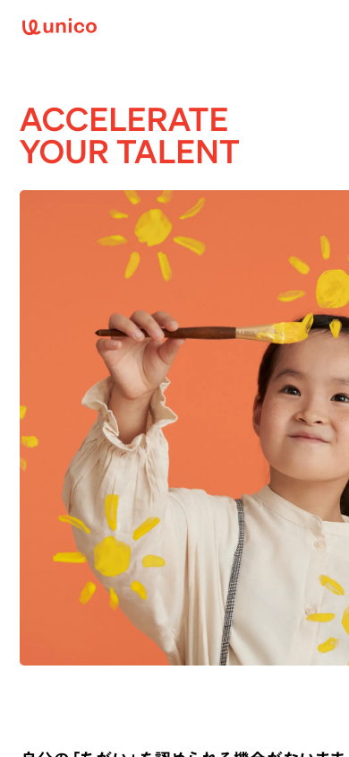
KVのaspect-ratioをPC1.5／SP0.86に切替え、スマホでは写真がほぼ画面を占有。角丸は10pxだけで子どもっぽくしない。
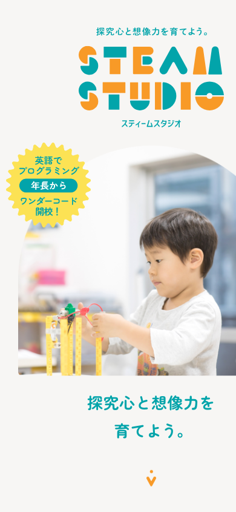